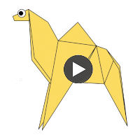
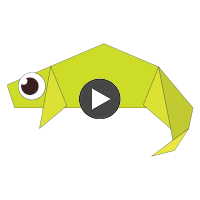
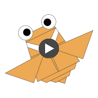
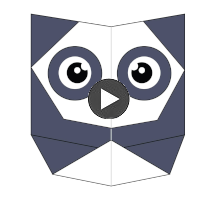
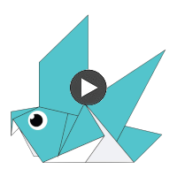
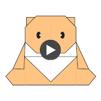

honey'orgamiStudio
Honey's Orgami Studio
Things that can be made from origami

interesting facts about Camels-
Camels are furry animals.
They are called ship of deserts.
when they need water they drink 8 gallons of it.

interesting facts about Chameleon-
Chameleons are classified as reptiles.
They can camoflouage themselves to stay from there prediters away.
they are small in size so they can camoflouage themselves.

interesting facts about Cicada-
Cicada are a superfamily, the Cicadoidea.
They are type of bugs.
they are small in size.

interesting facts about Panda-
The giant panda, also known as the panda bear or simply the panda, is a bear native to south central China.
They are herbevorus and eat alot of food.
they are big in size.

interesting facts about Peigons-
they are very comon in asia.
They like corn alot.
they are small in size.

interesting facts about Teddys-
they are a type of bears and are also called stuffed toys.
They are adorbed by many people.